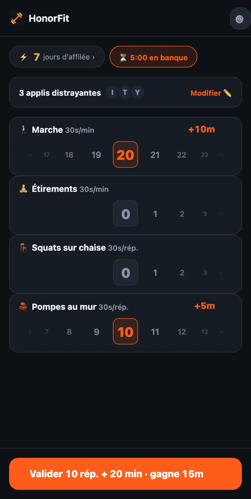

Pas de pompes ? Des exercices doux pour débloquer tes applis
Salut tout le monde ! HonorFit est surtout connu comme bloqueur d’applis avec des pompes (en anglais) : tes applis restent verrouillées jusqu’à ce que tu fasses quelques répétitions et que tu les notes toi-même. Mais si tes poignets, tes épaules ou tes genoux n’aiment pas trop ça, si tu passes la journée assis à un bureau, ou si les pompes, ce n’est juste pas le moment, aucun souci.
Pour moi, les pompes n’ont jamais vraiment été le sujet. Le sujet, c’est un petit ralentisseur entre toi et le scroll, qui en plus te fait du bien. Un tour du pâté de maisons fait ça tout aussi bien. Voici comment configurer HonorFit autour de trucs que tu peux vraiment faire.
Commence avec ceux qui sont intégrés
D’entrée de jeu, tu as quatre exercices : pompes, abdos, tractions et squats. Parmi eux, les squats sont les plus doux, et ils valent 30 secondes chacun.
Et comme c’est sur l’honneur, personne ne vérifie à quoi ressemble ton squat. Si un squat complet, c’est trop, te lever d’une chaise et te rasseoir, ça compte. Pareil pour des pompes contre un mur ou le plan de travail de la cuisine. C’est toi qui décides ce qu’est une répétition, tu la notes juste honnêtement.
Choisis les tiens (gratuit jusqu’à 3)
Depuis la version 1.15.0, tu peux renommer et supprimer des exercices, choisir ce que chacun rapporte et en ajouter jusqu’à 3 à toi, le tout gratuitement. Pro (3 $ par mois ou 19,99 $ en une fois aux États-Unis ; le prix varie selon le pays et la devise, et le store t’affiche le tien) te permet d’en ajouter autant que tu veux. Ça se passe dans la roue dentée de l’écran d’accueil, puis la carte Exercices. J’ai détaillé chaque étape de l’éditeur ici. Voilà le genre de choses que je regarderais.
Séances chronométrées (notées en minutes)
Passe n’importe quel exercice sur Minutes, ou touche une des suggestions avec un ⏱. Celles qui collent bien ici :
- 🚶 Marche. Ma préférée pour ça. Sans doute la victoire la plus facile qui existe.
- 🧘 Yoga ou 🤸 Pilates, ou ajoutes-en un qui s’appelle Étirements si c’est plutôt ce que tu fais. (J’en parle plus sur la page du bloqueur d’applis pour le yoga.)
- 🏊 Natation et 🚴 Vélo, tous les deux doux pour les articulations.
- 🪷 Méditation. Ce n’est pas du sport, mais c’est dans la liste, et dix minutes au calme contre dix minutes de TikTok, c’est un plutôt bon échange.
Les séances chronométrées démarrent à 30 secondes de temps d’appli par minute, donc 20 minutes de marche rapportent 10 minutes. La roue compte des minutes entières, jusqu’à 100 à la fois.
Des mouvements faisables au bureau (notés en répétitions)
Touche ＋ Ajouter un exercice et tape un nom. Quelques-uns qui marchent dans un bureau ou un petit appart, sans matériel :
- Squats sur chaise (assis-debout) : lève-toi de ta chaise, rassieds-toi.
- Pompes au mur ou pompes au bureau : des pompes contre un mur ou un bureau bien stable. Plus la surface est haute, plus c’est facile.
- Montées sur pointes : monte sur la pointe des pieds, redescends. Tu peux en faire en attendant le micro-ondes.
- Marche sur place : la suggestion Montées de genoux, juste plus lentement. Renomme-la si tu veux.
- Pont fessier et Kegel : discrets, sans matériel, et tu peux faire tes Kegel en réunion sans que personne ne le sache. J’ai écrit un article entier là-dessus.
Les exercices statiques (gainage, chaise)
Comme la roue des minutes compte des minutes entières, 20 secondes de gainage n’y rentrent pas vraiment. Je laisserais les exercices statiques sur Rép. et je déciderais ce qu’est une répétition, par exemple « un maintien de 20 secondes ». Gainage et Chaise sont tous les deux dans les suggestions.
Combien chaque exercice devrait rapporter ?
Les nouveaux exercices démarrent à 30 secondes par répétition. Tu peux monter ou descendre de 5 secondes à la fois. Quelques points de départ :
| Exercice | Compte | Rapporte | Par exemple |
|---|---|---|---|
| 🚶 Marche | Minutes | 30s par minute | 20 minutes de marche = 10 min |
| 🧘 Étirements | Minutes | 30s par minute | 10 minutes = 5 min |
| 🪑 Squats sur chaise | Rép. | 30s par rép. | 10 = 5 min |
| 🧱 Pompes au mur | Rép. | 30s par rép. | 10 = 5 min |
| Montées sur pointes | Rép. | 10–15s par rép. | 20 × 15s = 5 min |
| Gainage | Rép. (1 rép. = 20s de maintien) | 1 min par rép. | 3 maintiens = 3 min |
Ce ne sont que mes estimations de ce qui me paraît juste. Le bon chiffre, c’est celui que tu vas vraiment payer au lieu de tricher. Si la marche est l’habitude que tu veux le plus prendre, donne-lui plus de valeur, genre 1 minute par minute.

Quelques configs à piquer
- Journée au bureau : Squats sur chaise, Pompes au mur, Montées sur pointes, Marche.
- En douceur : Marche, Étirements, Squats sur chaise, Pompes au mur (c’est la capture ci-dessus).
- Zen : Marche, Yoga, Méditation.
- Appart silencieux : Pont fessier, Kegel, Squats sur chaise, Marche.
Je m’en tiendrais à trois ou quatre, puisque chacun a sa propre roue sur l’écran d’accueil. En version gratuite, tu arrives à quatre en renommant des exercices intégrés (Squats en Squats sur chaise, Pompes en Pompes au mur) et en ajoutant le reste comme tes 3 exercices perso.
Et si tu as une blessure, des douleurs ou un problème de santé, demande à ton médecin ou à un·e kiné ce qui te convient. Je fais un bloqueur d’applis ; je ne suis pas la bonne personne pour parler de tes genoux mdr.
HonorFit Blocker est un bloqueur d’applis gratuit sur iPhone et Android. Système de l’honneur, pas de caméra, rien ne quitte ton téléphone. Les séances chronométrées et jusqu’à 3 exercices perso sont gratuits ; Pro les rend illimités. Ce n’est pas pour tout le monde, mais peut-être que certains d’entre vous vont l’apprécier !